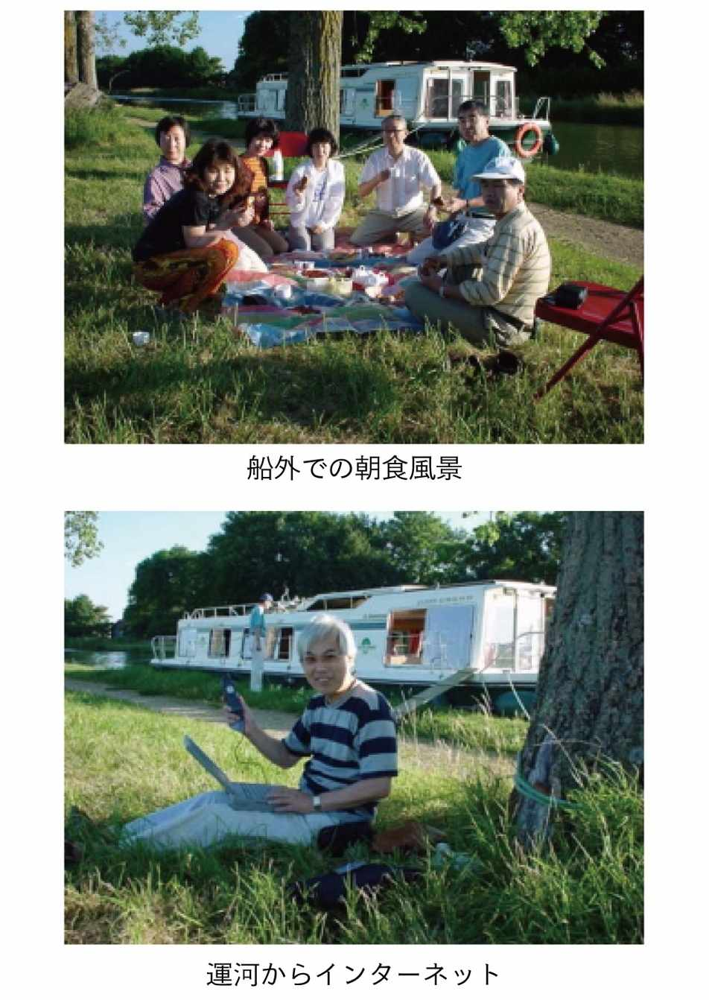
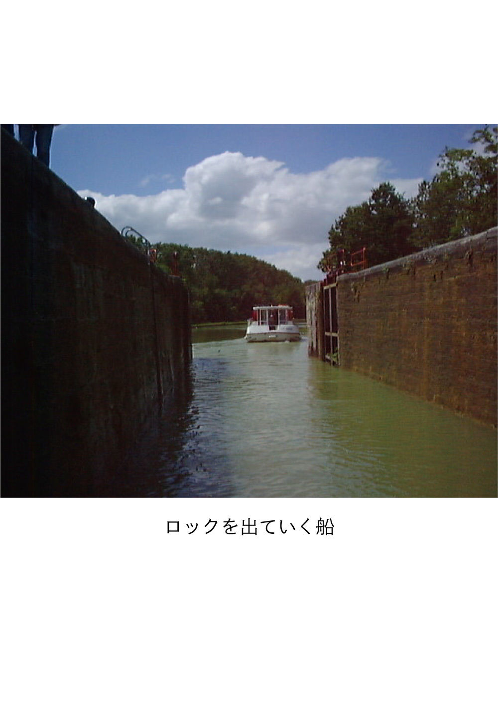
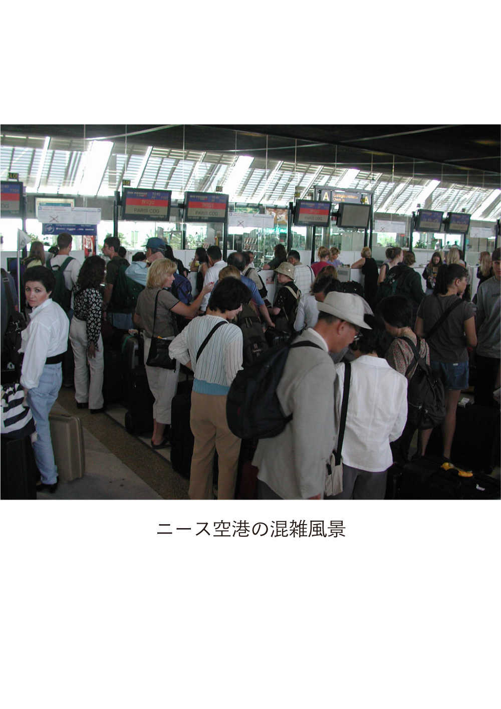
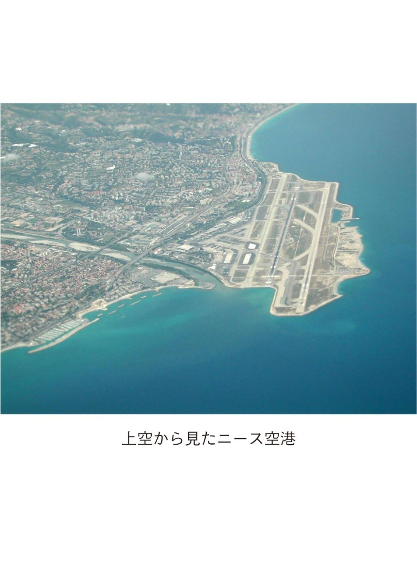

| 4組の夫婦による贅沢なフランス旅行 (22世紀アート) | |
| 新行内 雅博 | |
| 22nd CENTURY ART (2018) | |
目次
はじめに
このフランス旅行は平成12 年(２０００年)６月17 日から28 日の12 日間に実施した。
旅行が終わって、暫くの間、仕事や趣味の行事などに追われていた。
平成12 年９月になって、一緒に旅行した佐藤久男、小林恒量、木村功各氏の三人に本にしたいことを提案した。
すなわち、今回の旅行は、
（１）フランスの運河を、船を借りて自分達で運転してクルージングを楽しんだ（四泊五日）
（２）ヨーロッパの富豪が集まるニースの別荘を体験できた（三泊）
（３）ホテル、クルージング、交通手段（航空機、電車、観光バス）、バレエ鑑賞などほとんど自分達がインターネットで調べて契約して実行した手作りである
（４）自分達の様子をインターネットを通じて毎日現地からリアルタイムで、日本の留守家族や職場の仲間に写真画像を含めて知らせることができた（日本からのメールも受けた）
（５）四組の夫婦による共同作業である（少人数では難しい）
などの特徴がある。
「この旅行はいろんな意味で画期的だったと思う。特に、インターネット時代に相応しいインターネットを最大限に駆使した旅行であった。インターネットを利用したからこそ、短期間にこれだけの計画がたてられた。そして、豊かな自然に触れることができたクルージングや世界遺産巡りなど自分達の思い通りの旅行であった。ニースの別荘体験は別としても、基本的にはサラリーマンでも可能な旅行である。是非、本にして多くの人に知らせたい。是非協力してほしい」と。
三人とも快く賛成してくれた。
早く仕上げるつもりであったが、時間がなく遅れてしまった。しかし、こういう旅行はツアーのように単について行けばよいという旅行とは別に、自分流の旅行のひとつのあり方として参考になればと思う。少なくとも、一生に一度は良い友人達とこういう旅行をすることは意味があるのではないかと思う。長年、苦労をかけた奥さん達へのプレゼントとしてもどうであろうか。
なお、本文中では三人の了解のもとに敬称を省略させて頂いた。
１．いきさつ
われわれ４名で「ポパイの会」という名の会を作っている。
命名のいきさつは、４名は職場のパソコン同好会の仲間で、業務が多忙なこととお互いに多趣味のため、普段会って話をする機会がなかなか無い。
そこで、月１回くらいは各自の報告や情報交換を兼ねて会いましょうということになっていた。その場所は、佐藤や小林がよく利用していたＪＲ両国駅近くの「ポパイ」という洋風酒場である。そこの店の名を拝借して命名した。
平成11 年（１９９９年）10 月の会合で、木村からその年の９月、地元のグループの仲間達と、フランスの運河（ミディ運河）を、船をチャータして、自分たちで運転したクルージングの報告があった。写真を見せてくれながら詳しい説明があった。
他の３人は写真を食い入るように見ながら話にも興味深く聞き入った。
３人ともテレビで放映されていたイギリスやフランスなどの運河のクルージングを見ており、一度はこのようなことを自分達でやってみたいという夢を持っていた。
それをわれわれの仲間の木村が実行したのである。
誰からともなく、われわれもこういうクルージングをやってみようかと言いだした。
直ぐに、話はまとまった。実行は来年（平成12 年・２０００年）と決まった。
フランスの運河ということでひとしきり、運河とフランスのことで話がはずんだ。
さらに、木村からビッグな提案あった。「息子がニースに別荘をもっており、いつでも使ってくれてよい」と言っているからついでにそこも利用しようかと。
最初は大企業とは言え、サラリーマンの息子がニースに別荘？と意味が判らなかった。よくよく話を聞いてみると、木村は外国人留学生のホームステイを長年やっており、４人の男子学生と２人の女子学生を預かったことがある。自分達の子供を育てながら外国人留学生の面倒もみるという木村夫妻の並々ならぬ努力があった。木村夫妻は留学生達から今でも「おとうさん」「おかあさん」と慕われているという。その一人が住まいがロンドンでニースに別荘を持っていたのである。即ち、ロンドンの息子である。
今でも、ビジネスで日本に来る時は、木村夫妻に必ず連絡があるという。
話題は別荘、ニースやモナコへと拡大した。
今度は、佐藤から提案があった。「われわれだけで楽しむのはもったいないから、長年世話になった女房たちに感謝を込めて連れて行こう」と。勿論全員一致で賛成である。
さらに、佐藤から提案があった。「その船旅では、女房たちには何もさせずに、料理も全て男性達でやろう」と。誰も反対はしなかったが、家では何もしない新行内は内心不安であった。まだ時間もあるので何とかなるだろうと考えた。
家へ帰って奥さん達にこの話をしたら、皆即座に賛成であった。奥さん達にしてみれば旅行には連れていってくれて、しかも料理はしなくてよいとなればこんなよい話はない。
これでメンバーが決まった。具体的打ち合わせは来年（平成12 年）年明けからすることにした。
年末に大変な情報が木村から入った。
仲間の一人、小林が胃の手術で入院したと。
佐藤、木村や新行内らは運河のクルージングがどうなるかも考えたが、それよりも小林の手術がうまくいき、早く元気になることが先だと願った。運河のクルージングはいつでも出来る。
年が明けてから、木村から小林の回復が驚くほど速いと連絡があった。木村は小林の入院している病院に家が近いので、よく見舞いに行っていた。
平成12 年１月６日に川崎市登戸にある病院に３人で見舞いに行った。驚いたことに小林はピンピンとしており、病人特有の痩せこけた弱々しさはなかった。
聞くところによると、手術がうまくいったことは勿論であるが、自分一人が運河のクルージングにとり残されては困るということで、近くの丘によく登ったりして、手術後のリハビリに懸命に努めたという。
小林が病人ということも忘れて、病気見舞いがまた運河の話となった。
２．旅行の具体的計画
平成12 年（２０００年）に入ると木村から別荘の場所や運河、佐藤からはモナコとニースのオペラの情報などがよく入ってきた。
小林が出勤してきた平成12 年の２月から旅行計画を具体的に進めた。
職場近くの中華料理店・錦楽飯店（今は閉店して無い）で昼休み、２週間に１回、定期的に打ち合わせを行った。
検討結果から、次回迄調べる宿題を決めた。そして、皆で調べた内容を検討しては問題点を解決していった。
勿論、これだけではなく毎日のようにメールで情報交換をしていた。皆、家に帰ってからは毎日インターネットでフランスの情報を集めた。
この頃になると小林も病人の弱々しさは全く無く元気になっていた。
３月末までに次の内容が決まった。
（１） 旅行の時期と日数
小林の執念というか、奥さんの甲斐甲斐しい協力により小林の回復は予想以上に速かったことから、日が長く行動しやすい６月〜７月を選んだ。
ヨーロッパの旅行は７、８月になるとレジャーシーズンでレジャー関係の料金が全て高くなるので最終的には６月とした。
日数は長ければそれにこしたことは無いが、仕事や費用の関係などから12 日間と決めた。
この旅行の基本的な考えは、普段のツアーで味わえない運河のクルージングとニースの別荘体験を主体に考えた。
この条件をもとに、各人がインターネットやその他の方法で調査し、打ち合わせた結果、
○旅行は平成12 年（２０００年）６月17 日（土）〜28 日（水）の12 日間とした。
○運河のクルージングは19 日（月）〜23 日（金）の５日間
○ニースの別荘は24 日（土）〜26 日（月）の３泊
決め手となったのは船のレンタル料金で、表２−１のように
ａ ウイーク・エンドが入ると料金がかなり高くなる。
ｂ 時期も５段階に分かれている。
これらのことから、料金の最も高い時期を外してＣ時期を選んだ。運河のクルージングはＣ時期の最後の週６月19 日（月）〜23 日（金）とした。
逆算すると成田発は６月17 日（土）で成田着は６月28 日（水）となった。
（２） 分担と詳細な日程
このようにして、成田の出発日、運河はブルゴーニュ、運河のクルージング日程、成田への到着日が決まると旅行の流れが出来た。
フランス国内の移動としては北から南への移動になる。
パリ ↓ 観光 ↓ ブルゴーニュ運河 ↓ 南フランス（観光） ↓ ニース・モナコ（別荘を基点にした観光） ↓ ニースから帰途
などのほぼ日程が固まった。
船旅についてはブルゴーニュの運河を決めたが、限られた日数の中でさらにどの場所を選ぶかについては、安全、快適、観光性から絞り込みが必要であった。
航空機については安全でしかも安い航空会社をインターネットや人脈を通じて、佐藤が探してくれている。
自動車の運転には自信があるので、フランス国内の移動は便利なレンタカーを考えたがトラブルが生じた場合、フランス語での対応ができないのとその後の日程に支障をきたすと困るので諦めた。従って移動は全て電車、バス、タクシーと飛行機とした。
各人の主な担当は次のようになった。
木 村 クルージング（ブルゴーニュ運河の地域の絞り込み。船のレンタル）
ホテルの手配（パリ）
別荘の手配
佐 藤 往復の航空券 オペラの入場券 ホテルの手配（サン・フロランタン）
小 林 ＳＮＣＦ（フランス国鉄）の時刻調査、ルート指定と切符手配
ホテルの手配（ヴィル・フランシュ）
インターネット通信（フランス−日本）
バス手配（パリからサン・フロランタン）
新行内 ＳＮＣＦの切符手配（小林と分担）
パリからサン・フロランタンまでの観光計画
南フランスの観光計画とバスの手配
ホテルの手配（アヴィニヨン）
３．旅行の準備
（１） メンバー全員の顔合わせ
男性同士は同じ職場なので当然よく知っているが、奥さん同士はほぼ白紙の状態である。
そこで、一度全員の顔合わせをしようということになった。
皆の都合の良い平成12 年２月19 日（土）夕方の５時半から銀座２丁目のプランタン別館近くの銀座芙蓉倶楽部を新行内がセットした。（現在は無くなっている）
フランス旅行なのでまずワインの乾杯から始まり、初めての顔合わせとは思えないほど熱気に包まれており、各夫婦ともフランス旅行のことやその準備などについて話が沸いた。あっと言う間の２時間であった。
この雰囲気から見たら、旅行の成功は間違いないと確信した。
後は、計画をしっかりたてることである。
余録であるが、この日はよい天気であり、会合前に夫妻で何十年振りかの銀ブラを楽しみ、昔を想い出したカップルも居た。
（２） 切符、ホテルと別荘などの手配
今回はフランスのホテル、ＳＮＣＦ（フランス国鉄）の切符、観光バス会社、船会社、オペラの予約など全てインターネットで調べた上で、細かい詰めは各担当者がインターネット・メールにより直接相手と交渉した。フランスは観光国だけに各種ホームページが充実しており多くの情報を得ることができ、その中から都合のよいものを選択して相手と交渉することができた。
インターネット時代には時差が大変有効に作用した。時差は７時間あるので、夜先方に質問を送っておくと、翌日仕事から帰ってみると返事がきており、内容が前進できていた。出発日が近づくに従って、各人が分担した内容がほぼ契約でき、固まってきた。
サーチはYAHOO(FRANCE)が便利であった。ホームページに入ってしまうとほとんどが英語の説明があった。YAHOO(USA)ではフランスの細かい情報に不足する場合もあった。
ニースの別荘の所有一家は世界を相手にビジネスをしている。木村はロンドンの息子に別荘の件でインターネット・メールで問い合わせると、その返事はザイールや南アフリカなどからであったりした。これが今の世界なのだ。
しかし、全く問題が無かったわけではない。ＳＮＣＦの切符の入手とパリからサン・フロランタンまでのバスの手配である。
前者の「ＳＮＣＦの切符の入手」については、担当の小林と新行内は出発２週間前に契約したが、一向に切符が送られてこない。（ブッキング・ファイル番号を取得。その頃、フランスのホテルなどのパンフレット類の郵便物は３〜４日で到着）送ってきたのは、何故か小林へサン・フロランタンからパリまでの４名分の切符だけであった。残りの４名分と、パリからアヴィニョン経由ニースまでの８名分の切符がない。
二人でＳＮＣＦに毎日のように、メールで催促したが、既に送ったとかパリのＳＮＣＦのサービスセンターまで来てくれという全く不親切極まるものであった。結局は出発迄に切符は入手できなかったので旅行中の忙しい時間をさいてフランスで改めて購入することにした。小林と新行内に依頼したＳＮＣＦの切符が届いたのは何とフランス旅行から帰ってきてからであった。
後者の「パリからサン・フロランタンまでのバスの手配」については、小林をはじめ、皆でインターネットにより観光バスを調べた。往きは希望の経路をたどっても全てパリに戻るものばかりであった。２〜３のバス会社に問い合わせたが期待した返事は帰ってこなかった。この分についてはやむを得ず日本の旅行業者にお願いをせざるを得なかった。観光地のフォンテーヌブロー・アヴォン駅からサン・フロランタン迄は電車を利用することも考えたが、大きい旅行カバンを持っての移動は大変なので諦めた。
（３） 旅行の詳細日程の決定
上述のように、皆の並々ならぬ努力により平成12 年５月末には、往復の飛行機の出発時刻、利用電車の時刻、チャーターバスのスケジュール、バレー観賞やホテルなど最終に近い日程が全て決まった。クルージングや別荘などの肝心な情報もほぼ入手できた。これで旅行の目処がついた。出発までは気のついた情報を少しでも多く入手することや身の回りの準備に努めた。
（４） インターネット通信の準備
われわれ４名は職場のパソコン同好会のメンバーであることから、その日の様子を毎日、フランスから職場の仲間にインターネットで送ることにした。これは、インターネットネット時代で世界がなんと近いかをお互いに体験するためであった。同時に、日本に居る家族にもインターネットで毎日、我々の写真も含めた状況を報告することにより安心させることができる。いざとなれば、日本からインターネットでフランスへ連絡もできる。（家族からの連絡の場合、今までのようにいちいち連絡先を調べる必要がない）
この役目を受け持ったのが小林である。そためにノートパソコンを持っていくことになった。このパソコンが他にも大きな仕事もしてくれた。デジカメの写真貯蔵メモリ用として。
連絡する人達のアドレスを前もって小林に連絡した。小林は日本で全てインプットを済ませ、念のためテストを行って確認した。
フランスからのインターネットということで、小林がもっとも頭を痛めたのはプロバイダーをどうするかであった。インターナショナルということではマイクロソフトを使えばどこからでもできそうだが、アドレスを改めて取得しなければならないのと、それ以上に毎日移動するのでアクセスポイントがどうなるのかさえ不明であった。下手をしたらフランスの片田舎からうまく接続ができないかも知れない。
小林はいろいろ調べた結果、費用は多少高くつくがヨーロッパで使える携帯電話を日本にあるヨーロッパ系の会社から借りることにした。ヨーロッパから国際電話で、小林が普段使っている日本のプロバイダーにアクセスすることである。この携帯電話が我々が旅行する地域を全てホローすることも確認した。
（５） 地図の購入
運河の選択、日程の計画のためには初めての土地なので詳しい地図や運河の地図が必要である。木村がこれらをインターネットでフランスから直接取り寄せた。我々が行こうとしているブルゴーニュ運河の地域は高低差が少ないことが判り非常に参考になった。また、ブルゴーニュ運河の地図ではロック間の距離、ロックの高さ、運河沿いの街、観光地などが詳細に記入されてあり、船操作、停泊地、食料や水の調達、街での食事場所の選択などに大いに役立った。
（６） 船の運転資格など
今回の場合、船の運転には免許など特に資格は必要がない。しかし、右側航行、待機時の場所、停泊場所などのルールがありこれはきちんと守らなければならない。特に、ロックでの作業はロックキーパーとの共同作業なので、勝手に行動はできず、ロックキーパーの指示に従わなければならない。下手をしたら事故につながる危険性すらある。航路には信号があり、その表示の意味を理解して適切に素早く対処しなければならない。ヨーロッパの運河は小さい運河でも国際航路とみてよい。トラブルが生じた場合、言葉が通じないと困る。
船にはブレーキが無いので止める時はギヤをバックに入れてスピードを落とす。ロックに入る時などはギヤを前進と後進とをうまく切り替えてスピードを調整する。
特に、相手の船、橋桁やロック構造物などに衝突しそうな時は、素早い操作が要求される。車の運転ができれば何とかなる。しかし、運転手だけではどうにもならないのが船である。梶棒をもって障害物にぶつからないように操作する人が左右１名づつ必要である。
クルージング前に船会社から30 分程の指導を受けるが、体験を積みながら技量を上げるしかない。
（７） 船の間取り
ブルゴーニュ運河でわれわれが乗る船が決まった。
大きさはこの運河では最大の長さ13 ・８ｍ、幅３・57 ｍ。
定員は最大９名乗りである。ダブルベッドルーム３室。この他に昼間はラウンジとして使っている部屋が、夜はダブルベッドルームとなる。冷蔵庫付きのキッチン、シャワー、水洗トイレ２室。勿論発電設備もある。船の中だけで、何日も生活ができる。
（８） ロープの結び方
船の運航に当たって、船はいろいろな場所に係留することになる。
係留にはロープの結び方が重要である。下手をすると知らずに船が岸から離れてしまう。船が離れないように安全上勝手な結び方は出来ない。
そのためにはロープの結び方を覚えて係留技術を取得する重要がある。
これは、前年経験した木村からも強く言われていた。
・もやい結び（キングノット）
・エイトノット（１）（アイスピットへの引っかけ）
・エイトノット（２）（金具への結び付け）
職場にヨットの詳しい知人がいたので、昼休みに講習を受けた。
この技術は運航中、常に使うことになった。大いに役立った。
（９） 持参食料品の手配
食料品は出来るだけ現地調達として、現地で調達しにくいものだけを日本から持っていくことにした。
各人が勝手に準備してダブったり、あるいは偏ったりしないように、木村が持参食料品の案を作ってくれたので、分担に従って準備した。
持っていった食料品は醤油、塩、胡椒、マヨネーズ、ドレッシング、そば、冷や麦、カレー、ごはん、山菜ごはん、お新香、ふりかけ、コンソメスープ、ポタージュ、そばつゆ、紙コップ、コーヒー、お茶などである。
４．パリの初日
６月17 日（土）成田空港の集合場所は第１ターミナルビル・チェックインカウンターとした。
搭乗する飛行機は成田９時30 分発パリ行きの大韓航空機である。
木村と小林各夫妻は住まいが川崎なので集合時間７時30 分に間に合わせるため朝早く家を出た。
眠そうである。
搭乗手続きをして、指示に従って待合室に行く。飛行機は金浦空港でトランジェットしてシャルル・ド・ゴール空港（以下、ド・ゴール空港に省略）に、予定どおり現地時間６月17 日（土）午後６時40 分到着。（12 時間10 分のフライト）快晴である。まだ明るい。
午後７時とはいえ、日本のさわやかな昼下がりという感じであった。
到着ロビーに行く途中、珍しく世界初の超音速ジェット旅客機コンコルドが通路の近くに止めてあった。
珍しさも手伝って皆で思い思いに写真を撮る。
この飛行機？がまさか１カ月後にこの空港で離陸に失敗して多数の死者をだすあの大事故を起こすとは想像すら出来なかった。この事故以降コンコルドは飛んでいない。
ホテルは次の予定を考えて、パリ・リヨン駅に近い場所を木村が選んだ。
（その後、予定が変更になりパリ・リヨン駅には行かなかったが）
レピュブリック広場から約５分のところにある「ベル・エール・ボーブル・ホテル」である。
ホテルまでのルートはいろいろあるが、木村が高速鉄道を選んだ。
高速鉄道でパリ北駅まで行き、地下鉄に乗り換えて３つ目のレピュブリック駅で降りた。
所用時間は小１時間であった。
地下鉄の駅は日本と較べてだいぶ汚い。また、スリなども居るので少し緊張する。
われわれが利用したフランスの駅はほとんどエレベータがあったが、今回利用したこのレピュブリック駅だけはホームとの昇降は階段だけであった。重い大きな旅行カバンを持っての階段の下り、上りは女性達には大変な仕事であった。今回の旅行中、このように重いカバンを持って階段の昇降をしたのは幸いにもここ以外は無かった。
午後８時半頃ホテルに入った。長旅のせいかホテルに着いた時はホットした。
シャワーを浴びて汗を流してから皆で夕食に出かけた。午後９時過ぎというのにまだ暗くなっていない。
食事は近くのレストランでした。本場フランス・ワインでの乾杯である。本当にフランスに来たという実感が沸いた。料理はシャンピニオン・サラダ、ソーセージの煮込み、ローストビーフ、蒸し煮のムール貝などである。
ホテルに帰ると、今日一日の報告をインターネットを通じて小林は日本へ送った。
レピュブリック広場での全員の写真に文章も加えて、各留守家族や職場のパソコン同好会の仲間に送った。これが、インターネット時代の今回の旅行の１つの目的でもあった。留守家族は親たちの元気な写真を見て安心してくれたと思う。職場の同好会の仲間達は自宅でほぼリアルタイムにフランスからの報告を見ることが出来た。正確には、パソコン同好会通信部会の仲間は人数が多かったので、二人の会員にお願いしてまず彼等に送りそれを全・部会員には電子メールで配信してもらった。部会員の皆さんは一生懸命仕事をしているのに楽しく遊んでいる写真を送るのは心苦しかったが、地球が狭いというインターネット時代を実感してくれたと思う。旅行期間中、毎日こういう写真付き記事を小林は送り続けた。
５．旧画家村バルビゾン
６月18 日（日）。フランス２日目の朝は快晴である。今日は運河の出発地点サン・フロランタンまで観光しながら行くことになる。バスの出発時刻は９時30 分である、
それまでの時間、各夫妻は思い思いにホテルで朝食をして近くのレピュブリック広場とその近辺を散歩した。このレピュブリック広場はパリ中心部からの北東約３km にある。
広場の中心にはフランス共和国のシンボル「マリアンヌ」像がある。道路はこの広場から放射状に延びている。この広場界隈はガイドブックに紹介されることは希で、観光地としては有名ではないが、古い品のよい建物が広場を囲むように建っており歴史を感じさせる落ち着いた地域である。
ホテルをチェックアウトしてバスを待つ。予定の９時30 分になってもバスは来ない。ホテルの周囲を皆で見守るがバスはない。40 分頃になって近くの路地の角を曲がろうとしているが、路上駐車が多いため曲がれないで苦労している大型バスを発見。今日のバス担当の小林がバスに近づいて我々のバスであることを確認する。ホテルの前の狭い道は片側がヨーロッパ特有の路上駐車で埋まり、そのためにバスはホテルの前まで来れない。バスまで各自旅行用スーツケースを運ぶ。我々８名のために何と大型バスとは。（51 人乗りのルノーの新型。運転手はビッグ・バスと言っている）日本では考えられないことである。トイレもついている。予定より20 分遅れで出発。
日曜日の朝は、パリ市内はいたって車が少なく静かである。バスは市内観光をしながら最初の目的地のヴェルサイユ宮殿に向かう。バスは南下してレピュブリック広場から右に曲がる。暫くするとルーヴル美術館のガラスのピラミッドが見えて来た。今にも止まりそうな速度でルーヴル美術館の前をゆっくり走る。運転手がわれわれに気を配ったサーヴィスをしてくれる。このようにして、オルセー美術館、コンコルド広場、セーヌ川の橋上、エッフェル塔、凱旋門と十分見物出来た。ビッグ・バスの高い窓からなので眺めは各段によい。写真もよく撮れた。
ヴェルサイユ宮殿には約40 分ほどで着いた。
暫く待たされた後、宮殿内の観光コースを約１時間半かけて見学。人の波に流されての見学である。新行内夫妻はこれで２回目であるが、ここはいつ来ても人が多い。日曜日のせいか大勢の見学客で賑わう。友達同士で来た中学生くらいの子供達も目立つ。アラブ系やアジア系などあらゆる人種が見られる。これも変わらない風景である。見学は大勢の人々の流れに沿って各部屋の豪華な内装や家具を見て廻った。当時の貴族の贅沢な生活が判る。
次の目的地旧画家村・バルビゾンへ向かう。バスはフランス特有の見渡す限り畑地のなだらかな丘陵の田園地帯を走る。まさに、ミレーの「落ち穂拾い」を想わせる風景である。バスは約１時間ほどでバルビゾンに着く。
このバルビゾンは19 世紀の中頃、テオドル・ルソー、ミレー、コローなどバルビゾン派画家達が活躍した土地である。
昼時なので昼食をとりたいがレストランはどこも混み合っている。８人が入ろうとするには時間が掛かかりそうだ。この際、時間と費用の節約を兼ねて、サンドイッチと牛乳などを買いこんで、ホテルの庭の片隅を拝借して済ます。
バルビゾンは日本で言えば、軽井沢のような雰囲気で人と乗用車で賑わっていた。
街外れでは森林浴を楽しむ人達を何人も見かけた。
乗用車で来たパリの中年の日本人夫妻も車の中から我々に挨拶をしてくれた。
昼食後、メインストリートを散歩して近くのバルビゾン派美術館を見学。木造の木賃宿を改造したような古い建物の中にはミレーやルソーなどの絵やデッサンが多数展示してあった。
デッサンは未完成な印象を与えるが、余分なところがないので画家の個性に触れた気持ちになる。若い頃の絵ばかりで有名な絵はない。ほとんどが無名時代の作品である。それとなく彼等の作品と判る。日本人観光客が多いせいか日本語のパンフレットも置いてある。
次の目的地フォンテーヌブロー宮殿に向かう。田園地帯を走って約30 分で着いた。
フォンテーヌブロー宮殿は外見はヴェルサイユ宮殿とは異なり女性的な清楚な美しい宮殿である。この宮殿はブルボン王朝の歴代王やナポレオン１〜３世などが利用した歴史的建物である。建物全体はコの字形をしており、門から入ると約１５０ｍ、道は真っ直ぐにコの字形の一番奥の正面建物の入り口階段に通じている。左右の建物と道の間は芝の手入れの行き届いたきれいな庭園である。内部はヴェルサイユ宮殿ほどではないが、各部屋とも贅沢な造りで家具も豪華である。ヴェルサイユ宮殿より良かったことは見学者が少なく部屋の中をゆっくりと見学できたことである。宮殿裏にはここにも広い立派な庭園がある。時間があればもっと楽しみたいところである。
次は今日の宿泊地サン・フロランタンである。フランスの道路は道もよく車は少ないので快適なドライブである。40 才前後のフランス人の男性運転手はリズムの強い音楽をかけながら今にも踊りだしそうな雰囲気で運転している。時々ハンドルから手が離れている。踊っているつもりかも。最初ははらはらしたが、しばらくして慣れてきた。道路も空いており対向車もほとんどない。相変わらずなだらかな眠くなるような田園丘陵地帯を走る。ビッグ・バスの旅は快適である。１時間程で目的地サン・フロランタンのホテルに到着した。

ホテルは「シャトー・エ・ホテル」で、街の中心に近いところにあり、２階建てだがエレベータもないこじんまりとした落ち着いた清楚な建物である。
部屋は広々としておりゆったりとした気分にさせてくれた。旅の疲れをとるにはよい。
夕食は手入れの行き届いた緑の多い庭を見ながら、テラスで解放された気分の中でとった。空気はからっとしており、本場ブルゴーニュ・ワインをこのブルゴーニュの地で味わうのはまた格別である。料理はサーモンのオードブル、サーモンのクリーム煮、肉と野菜の取り合わせなど盛り沢山であった。
毎年ここへ避暑にきているというベルギー人の50 才代の夫妻とその祖父と見られる３人連れの一家が、我々の直ぐ近くのテーブルで食事をとっていた。挨拶をしているうちに直ぐに仲良くなった。各人がおもいおもいに歓談に入った。こういう場合のために小林の奥さんは予め折り紙を沢山持ってきていた。彼等の目の前で鶴を折って見せた。すっかり彼等は折り鶴のとりこになってしまった。なごやかな国際交流の場となった。
明るい時に始めた夕食もあたりはすっかり真っ暗である。
６．乗船準備
６月19 日（月）快晴。暑くもなく日本の初夏の気候である。今日はいよいよ運河のクルージングの始まりだ。まさに、船旅の出発に相応しい天気である。昨日はゆっくりと休むことができ、よい休養となった。
さて、今日は乗船前にやらなければならない大事な仕事が２つある。
１つは船中生活のための食料品の買い出しであり、もう１つは未入手のＳＮＣＦの電車の切符の取得である。
何はともかく昨晩と同じテラスで朝食をとる。
（１） 買い物
船で使う食料品を街で調達した。日本出発前にそれぞれのスーツケースは簡易食品でびっしり埋まっていた。レトルトのご飯、カレー、乾麺類、調味料、ふりかけ等。
ここで買い足した物は、何はなくても原地産のワインと水（旅先での水には注意）。牛乳やヨーグルト、つまみにチーズ、ハム、野菜、果物ｅｔｃ。大きな声では言えないが、レストランのパンが飛びきり美味で食べ放題なので、日頃やりくり上手な奥さん達はナプキンに包んで余分にキープしていた。
野菜や果物は近くの街中心部で開かれている市場で買った。市場は定期的に開かれており、衣服、雑貨、靴や椅子など品物の種類も多く、多数の店で賑わっていた。我々日本人から見ると今では珍しい光景である。ここはこの地域の中心的町である。
（２） 電車の切符
全く誠意のなかったＳＮＣＦのために余分な時間を使う羽目になってしまった。入手しなければならない切符はパリからアヴィニョンまでの４名分、アヴィニョンからニースまでの８名分である。
交渉場所はこの町のサン・フロランタン駅である。当事者である小林と新行内で出かけた。
パリでの交渉も考えたが、パリの担当場所は市街地から離れた所にあるということが判っており、時間も取れなかったのでここでの交渉に決めていた。
日本で受け取ったＳＮＣＦからの「ブッキング・ファイル」の写しと「サービス部門からの謝罪の入ったメール」などの写しをもって向かった。
当方は多少わかる程度の英語、先方は少し英語のわかる30 代後半のフランス人女性である。当方の説明を聞きながら彼女はしきりにパリのＳＮＣＦ担当者とやりとりしているが一向に話が進んでいるようにはみえない。しばらくすると、見るに見かねてか近くに居た英語もフランス語もわかる年輩のフランス人紳士が間に入り話をとりついでくれた。これを受けて駅員の女性はＳＮＣＦのパリの担当者と電話をしながら、われわれへの対応を相談している。話が進み始めたようだ。一時は無料で発行してくれるまでになったが、直後パリからの指示でカードで払うことになった。
この間約30 分のやり取りであった。ようやく、目的の切符は入手できた。
お世話になったフランス人紳士には丁寧にお礼をいう。
７．ブルゴーニュ運河のクルージング
（１） クルージング１日目
６月19 日15 時10 分われわれの旅行の最大の目的であるブルゴーニュ運河のクルージングの出発である。計画から８ケ月、今まさにこのブルゴーニュ運河にいるのである。
４泊５日のクルージングの始まりである。
出発前に船の設備と操作の説明をひととおり受ける。さらに、20 分ほど乗船して走行しながら運転指導を受ける。
いよいよ出発である。
まず、小林の運転でサン・フロランタンの岸辺を船はゆっくり離れる。船は運河の上流に当たるデジョン方向に向かって南下した。午後７時にはロックは閉まるので行けるところまで行くことにした。
のどかな運河の中を50 分程進むと最初のロック（１０７番ロック）が見えて来た。上りである。ゲートは開いている。このまま入れる。船はスピードを落として慎重にロックに入る。
狭いロックの中では舵が効かない。木村と新行内は梶棒を持ち船の両袖に立ち、船がロックの壁にぶつからないように梶棒で壁を押しつけながら巧みに操作する。船がロックの中をゆっくりと進む。ロックキーパーのおじさんが上から顔をだして船の様子を見ている。皆で挨拶をする。船がロックの中央で止まると佐藤がロック壁の梯子段を素早く登りロックの上に立つ。船からロープを投げ上げると佐藤はそのロープを係留杭に廻してロープの端を再び船に投げ入れる。ロックキーパーのおじさんが観音開きの後方のゲートをゆっくり閉める。約３分程で後方ゲートが閉まると、今度は前方ゲートを水を入れながら少しづつ開ける。水がゲートの中に入ってきて、水位が上がる。船も水位とともに上昇する。船の位置がフラフラしないように先ほどのロープを木村が常に張った状態で保持する。これは大事な仕事である。この間約10 分で水はロックの中を満たし、水面は上方の運河と同じになる。これでひとつのロックを進むことになる。ロックキーパーのおじさんにお礼を言ってロックを離れる。ロックの作業中はそれぞれ分担があり男性４人は休む暇が無い。
女性達は初めてのロックでどうなることかと心配したようだが、これでホットしたようだ。後で気がついたことであるが、このロックは高さ５・14 ｍで、今回のわれわれの航程では最大の高さであった。最初から難関のロックを突破したことで、その後のロック作業によい経験となった。

20 分程進むと次のロックが見えて来た。ゲートは開いているのでこのまま進入できる。今回も前回と同じ作業によりロックを通過することができた。慣れてきたせいか作業も少しはスムースになってきた。運転は小林と新行内で交代でおこなった。運河を航行中は運転手以外はゆっくりできる。ロックでの作業は素早い行動が要求されるので休める時に休んでおくのがよい。
女性達はコーヒーを入れてくれて男性達をねぎらってくれた。
午後７時になったのでロックが閉まる時刻である。運河の適当な所に船を係留する。今夜はラ・シャペル橋(１００−9 9 番の間)の水場にした。今日は７ロック、13 ・６km の船旅であった。
午後７時というのにまだ明るい。シャワーで１日の汗をとり、女性達が作ってくれた豪華な料理とサン・フロランタンで買った地元のブルゴーニュワインをタップリ呑みながら今日一日の出来事を話題にしながら楽しんだ。船での料理は当初男性達でやるつもりで宣言したが、相次ぐロックでの船の操作で疲れていることや、何を食べさせられるのか判らないという心配もあり、女性達が自発的に料理を担当してくれた。奥さん達の愛情である。
クルージング期間中こういう状態が定着した。
午後10 時ようやく外は暗くなってきた。それぞれベッドに入る。
なお、船には前述のように、寝る場所は専用の寝室が３室（狭いがダブルベッド）と夜ベッドがわりに使うラウンジの４部屋である。各部屋を経験出来るのと不公平にならないように毎日部屋は交替することにした。ダブルベッドも広くはないが、ヨーロッパ人も使えるものなので疲れた体を休めてくれるには十分であった。
（２） クルージング２日目
６月20 日（火）。今日も快晴。空気が澄んでいる。
普段都会で生活している人間でも自然の中で生活をしていると自然に早起きになる。６時半には木村が船のエンジンをかける。
この船は、エンジンで発電して電気を供給しているのでエンジンがかからなければ料理も何もできない。
朝食は岸辺でとることにした。適当な場所を求めて船を進め、見晴らしのよい大樹の近くに船を着けた。草の上にシートを敷き、輪になっての食事である。子供達が大きくなった今、縁のなかった久し振りのピクニック気分である。
夢だった日本で想像していたことが一つ一つ現実となった。幸せな楽しいひとときである。小林はフランスのこの片田舎からインターネットで早速、日本への報告を発信した。世の中は便利になったものである。

８時に99 番ロックに向けて船はスタートする。船は快適であるが、昨晩から２つあるトイレの内１つが詰まって使えない。もうひとつも使えなくなったらピンチである。早速、船会社に電話して修理を依頼した。トネルの町で待つことになった。
待っている間、旦那さんがロンドンの有名な保険会社を定年退職して、自分たちの船でこれからニースやモナコに向かいそこで暫くのんびり過ごすという夫妻に会った。旦那さんは仕事で日本にも行ったことがあるという。彼はいかにもイギリス紳士風だが見知らぬわれわれを何となく避けている様子であった。しかし、奥さんは愛想よくいろいろと話をしてくれた。おおらかな奥さん。
20 分ほどで車がきて素早く修理をしてくれた。運河でのこういうサービスは速いようだ。以後、何度か詰まったが、修理の仕方をよく観察していた佐藤が特殊能力を発揮して、その都度ちゃんと使えるようにしてくれて助かった。お陰で、以降は修理のための運行のロス時間がなくて済んで効率が上がった。
この穀倉地帯を航行すると、運河沿いには倉庫風の高いサイロをよく見かける。昔はこの運河が穀物などの重要な運搬手段であったことが容易に想像できる。
15 時40 分、タンレイで水を補給することにした。トネルで補給したつもりだが、十分入らなかったようだ。木村と小林がやってくれることになり、その間他の６名は近くのタンレイ城を見学をすることにした。徒歩で７〜８分のところである。入口はがっしりとした石造りの歴史を感じさせる建物であるが、城の中に入ると落ち着いた気品のある立派な建物が配置されている。
16 時30 分出発。船旅には思わぬ幸運があるものだ。89 番ロックでは突然目を疑うような光景に出会った。パリから抜け出してきたかのようなファッションモデル風の美人ロックキーパーの出現である。よく似合う風景である。一番眠い頃であるが目がさめた。話を聞くと大学生でここでアルバイトをしていると言う。
今日は85 番ロックの手前で泊まることにした。
近くにレストランがあるので今夜はこの田舎町で夕食をとることにした。言葉は通じないので「おまかせ料理」となった。料理やワインのうまさもさることながら、ここの水のうまさは格別である。日本でもなかなか味わえない程のものである。
それに、ワインと水のピッチャーは壺状の陶器製で色、形といい芸術品で印象に残った。
今日は 15 ロック 31 ・２km の船旅であった。
（３） クルージング３日目
６月21 日（水）快晴。８時に85 番ロックを出発。20 分後に84 番ロックに入る。
ここは無人ロックである。無人ロックは初めてである。ロックの操作ボックスがあり、説明があるが操作がよくわからないので連絡ボタンを押して掛かりの人に来てもらった。操作方法の指導を受けて、無事このロックを通過できた。これから、あと２ロックが無人である。
83 番ロックにはここで老後を過ごしているオランダ人夫妻が居た。婦人は早朝のテニスをしてきたあとの格好で大変元気そうである。旦那さんは椅子に座ったまま動くでもなくにこにこしている。年をとると洋の東西を問わず女性の方が元気である。小林の奥さんが早速折鶴を折って差し上げる。この老夫婦は大変感激してくれて自家製のジャムをお礼にくれた。ここでも、思わぬ国際交流ができた。
この辺の運河は特に自然がそのままが残っている。視界の左右には延々と続くフランス特有の曲線状のなだらかな丘陵の田園地帯である。我々の船だけがわがもの顔で静かに運河の水面を進む。水辺には親鴨が子鴨を引き連れて遊んでいる。われわれの船に気が付くと慌てて岸辺の茂みに逃げて隠れ込む。逃げ方がぎこちない子鴨もいる。アオサギ（注）が直ぐ近くに行くまで飛び立たない。警戒心が薄い。運河沿いの樹木には大きな提灯を串刺にした形で大樹に寄生している宿り木があちこちに見られる。自然の中にこのような大きな雪洞（ぼんぼり）形のある光景は我々を一層和ましてくれる。まさに絵の中に居るようだ。何とも贅沢なことであろうか。
運河の両岸には大木プラタナスが５〜10 ｍほどの間隔で整然と植えられている。見た目にも心地よいきれいな景観である。しかし、この並木景観には根拠があるようだ。運河の岸辺は航行する船の波によって常に浸食の危険に晒されているという。大木のプラタナスは根が深く広く根付くので岸辺を護るのに適しており、数本では効果が少ないがほぼ全域に植樹されることによって運河を常に護る効果があるという。これも、長年かけて習得した土木技術の知恵なのだろう。
（注）千葉県中央博物館の担当者に鳥の写真を見せたら、アオサギの一種ということで図鑑でも確認してくれた。アオサギは日本、中国、朝鮮半島などの東アジアに多く生息している。繁殖期以外は群をなさない習性とのこと。フランスでの写真は珍しいということなので参考に差し上げた。
11 時半、アンシ・ル・フラン（80 番ロック）に着く。今後の予定を考えると、これ以上進むと帰りがきびしくなるのでここで引き返すことにした。
木村夫妻と佐藤の奥さん、小林の奥さんが２人１組で自転車で買い出しに出かける。
残りの人達で水の補給とパソコンやデジカメの充電をした。（給電設備がある）
買い物は一仕事である。クルーザーの屋根に積んだ４台の自転車で走ったわけだが、日本のようにコンビニがそこかしこにあるわけもなく、地図を頼りにスーパーマーケットを探さなければならない。健気な奥さんたちがか細い腕で、５リットルのワインボトル、エビアン数本、チェリー、チーズを買い込む。８人分ともなると量も多い。しかも自転車がこぎづらく荷台も小さい。背中に担いで懸命に走る姿は「花のＴＯＫＹＯ」では想像もつかない。
12 時40 分出発。これからはロックは全てが下りになる。無人の82 番ロックでは水門が開いていない。これは問題だ。船を岸辺につけて木村と佐藤が降りて操作盤を操作して水門を開けなければならない。水門が開いたら船を水門まで人が曳いて行き、さらに船を岸から離して船が航行できるようにすることの作業がある。特に、無人ロックは大変である。
83 番ロックの手前でトラブルが発生した。ロックが開いていないのでスピードを落として待機していたら、強い横風で船は流されて、岸の浅瀬に乗り上げてしまった。運河の船は水深の浅いところでも航行できるように丸底である。そのため横風には弱い。全員で力を合わせた結果何とか脱出できた。
ところが、またトラブルである。無人の83 番ロックに入るのに、また船を降りて操作しなければならない。船を岸に着けると佐藤、木村、新行内が岸に飛び移った。その時、半ズボンの佐藤、木村は脚に、滑って手をついた新行内は腕にそれぞれ毒草に接触をして全面がかぶれだした。ひりひりと痛い。直ぐに水で洗い落としてからマキロンを塗ったが、暫く痛みがとれない。とんだ目にあった。
88 番ロックでは３隻が入るという珍しい経験をした。我々の船が入っていると後門をなかなか閉めない。後から船がくる。その船が入ると、もっと前に行くように指示を受ける。更に、もう１隻入れるためだ。２隻すら経験していないのに一気に３隻同時進入となった。ロックは船で埋まった。直ぐ後ろは年輩夫婦で、次は熟年イタリア人男女４人のグループで陽気で明るい。
ロックにいる間、彼等と一時話をすることができわずかながら国際交流ができた。
次のロックも３隻一緒になる。他の２隻は我々の船より速いので、今度は我々の船は最後になった。
今晩は92 番ロックと93 番ロックの間の牧場に面した岸辺に停泊した。
今日は 17 ロック35 ・６km の船旅であった。
（４） クルージング４日目
６月22 日（木）。快晴。午後暫く振りに雨が降った。
食料も底をついてきたので、この水路沿いでは比較的大きい街のトネルで、木村と新行内の奥さんが２人で自転車で買い出しに行った。
帰りに珍しく久し振りの雨に降られて濡れて帰ってきた。
昼はトロンチョイ（98 番ロックと99 番ロックの中間）のレストランで食べた。
13 時10 分出発。この頃になると、各人の役割もはっきりしてきて動作も板につく。船がロックに入る手前から木村と小林は船がロックの壁にぶつからないように船の両袖から梶棒で素早く操作する。運転の新行内は船がロックの中央にうまく進入できるように、かなり手前から船の位置を調整してスピードを落とす。船のロックの位置が決まると佐藤が岸にロープを持って乗り移り、ロープを係留留めに巻き付けて端を木村に渡す。奥さん達も見よう見まねでこれらの作業を手伝ってくれる。ロックに入った時は佐藤の奥さんは船の後部がロックの中に安全に入ったことを常に確認してくれた。船は大型バス程の大きさなので後部の状態が判らない。ロックの中央に止めるのに、ギアを何時ニュートラルに入れてよいのか運転者にとって迷うところで、欠かせない支援であった。
なお、男性達は当然だが、女性達も交互に船を運転してクルージングの醍醐味を皆で経験した。これらの光景は記念として写真に撮ってある。

船がロックを出るまでのわずかな時間だが、ロックキーパーや地元の人達と交流をすることもロックでの楽しみである。運河は外国人の利用者も多いので、英語で何とか通じる。
特に大学生のアルバイターは英語で話しかけてくる。あるロックキーパーの話ではここで日本人に会ったのは20 年振りとのこと。
そして、船は大型バス並みの大きさなので慣れるまで運転は大変であったが、この頃にはわれわれはこの大きな船を自由に操作できるようになっていた。
運河の傍らには運河に沿って必ず小道がある。気分転換のために船と並走しながらサイクリングも楽しんだ。この小道は、昔船を馬で曳いた当時の遺産である。
船はのどかな景色の中を休みなく進み、18 時には出発地点のサン・フロランタンに無事着いた。
船は出発地点を通り越して１つ下流側の１０８番ロックの下側に停泊した。明日返却するまではまだわれわれの船である。
今日は 15 ロック31 ・５km の船旅であった。
（５） クルージング５日目
23 日（金）。快晴。今日は下船の日である。電車の時刻もあるので早く手続きを済ませたい。下船を早くするためには、朝一番で１０８番ロックを通過できるように、ロック運転開始30 分前の７時30 分に１番でロックに入れるように待機に入った。
ところが、ロック管理人のおばさんが飛んで来た。ロックの運転開始まで30 分もあるので、慌ててもロックは直ぐ作動しないことを告げに来た。こんなに早くロックに入ろうとしている不慣れな日本人達にびっくりしたようであった。
しかし、われわれは全て認識済みであることを告げると安心して引き下がって行った。
こういうことはのんびりとしたフランスの片田舎では珍しいことなのであろう。日本人の勤勉さがでてしまったようだ。しかし、初回のロックに入れないと約30 分遅れることになり、われわれのその日の行動にも影響する。
珍しいことに、ここでは運河の下を川が流れている。即ち、運河は川をまたいでいる水路である。ここにもフランスの優れた運河土木技術を見たような気がする。
下船して船から荷物を下ろして、船会社の事務所で下船の手続きをする。
係員が船に乗り込み船内をチックして承認を受け、使用したガソリン代などを木村がカードで精算する。９時過ぎには無事下船となった。

８．サン・フロランタンの街
サン・フロランタンの街には18 日、19 日、22 日と23 日の４日居たことになる。
延べ時間にしたら40 時間程度であるがわれわれにとって想い出深い街になった。
サン・フロランタンはパリから南東約１７０km のブルゴーニュ地方北部の田舎街である。
この街は中世を想わせる古い建物が多く、小さいがまとまったきれいな街である。
前述（第６章）したように、市場の時は活気のある街である。
船を下りる前日（６／22 ）に夕食の食材探しに、皆で街を散歩した。
歴史の古そうな教会、３軒の銀行、食料品店などひととおり揃った店々が住宅などと隣り合わせで街を形成している。街の中心には小さな広場があり、その広場の真ん中には小さな水場がある。水場の中心には６体のキリスト像が円周方向に放射状に並んだ円柱があり、その足下には２頭の猛獣の頭をした彫像の口から水がちょろちょろ流れ落ちていた。
レジャーか馬の散歩か乗馬者が街を歩いていた。家々の窓には花が飾ってあり派手なところはないが、清楚な街である。
サン・フロランタンについては日本に居るときは、比較的大きな運河の中継点で、船会社のある街という程度の認識で、観光パンフレットやガイドブックには紹介記事が全く見あたらなかった。それもそのはずで、このような小さな運河を利用した観光ツアーでは、手間ばかりかかりビジネスにならないからであろう。（ここでは大型の観光船は見かけなかった）
われわれとしては日本人と会うこともなく手作りの旅行の良さをしみじみと味わうことができた。
なお、どこにでも見かける日本人に出会わなかったことは珍しく、今回の船旅はフランスの田舎を知る貴重な旅であったとも言えよう。
夕食用にピザを買った。ピザ屋は水場の近くにあり、アゼルバイジャン出身のアラブ人夫婦が経営している。店は夫婦と20 歳前後の２人の娘でやっており、娘達はアラブ特有のほりの深い美人姉妹である。我々の注文したピザで、佐藤、小林の奥さん達に家族全員でピザ作りを経験させてくれた。
この街はアラブ人が多く目につくが、この街に住み着いており皆ゆったりとした雰囲気で生活しているようだ。危険を感じたことは全くなかった。
機会があればもう一度、この街を訪れてみたいということがわれわれ全員の願いである。
９．貴族のレストラン「ル・トラン・ブルー」
23 日。今日は一旦パリに戻り、ＴＧＶに乗り換えてアヴィニョン（プロヴァンス）に行く予定である。サン・フロランタンからパリ行きの電車は11 時31 分であるので、両替に小林夫妻と新行内で街の銀行に出かけた。
この銀行はアラブ系人たちで混雑しており両替も時間がかかった。ここでも小林のお奥さんの折り鶴外交が女性銀行員相手に行われ、熱中して賞賛を得た。この銀行はあの噴水の近くにあり、両替を済ませて帰る途中で昨日のピザ屋の美人姉妹の妹に会った。彼女もわれわれを覚えており人なつっこく挨拶をしてくれた。
気に入ったこの街ともお別れなので、時間が許す限り街並みを楽しみながら船会社の事務所まで戻った。
事務所から駅までは１・６km ある。荷物も多いのでタクシーを利用した。この小さな街で何度も利用したので馴染みの運転手がきた。すっかり仲良くなっていた。
サン・フロランタンからアヴニョンに行くには、ディジョン経由で行く方法が地図上では近道である。
パリに引き返す必要がないから、往復３２０km の距離と料金が得することになるはずだが、計算どおりいかないのがフランス国鉄である。待時間も含めるとパリに引き返す方法が便利でアヴニョン到着は高々30 分遅い程度である。フランス国鉄はパリを中心に放射状に延びているので、パリに出た方が何かと便利なようだ。
パリに行く車中で旅行中の日本人ＯＬ２人と会った。１人がフランス語が話せるので、電車を利用した個人旅行を楽しんでいる。今日、日本に帰るという。こういう所で日本人に会うと安心するとともに旅行先の情報が得られて有り難い。
パリ・リヨン駅には途中乗り換えて、予定どおり13 時20 時分に着いた。アヴィニョン往きのＴＧＶは15 時18 分発なのでここで昼食をとることにした。
佐藤は拘っており、前から考えていたようで貴族のレストラン「ル・トラン・ブルー」、（英語では「ブルートレイン」）を探しに行って間もなくして帰ってきた。このレストランは昔、貴族しか利用出来なかったという特別な所である。貴族たちがここから列車でコートダジュールなどに出かける時の待合室であった。内部の装飾は豪華で、特に天井はここから行く先々の風景画が何点も明るく大きく描かれていた。一時、貴族になった気分である。
日本人の利用者も多いせいか、ウエイターも片言の日本語で挨拶してくれる。
食事もそう高くはなく、久しぶりに都会パリの雰囲気で食事をした。
10 ．アヴィニョンとその近郊
アヴィニョン迄はパリ・リヨン駅からＴＧＶで約３時間半である。
距離は東京から大阪とほぼ同じである。この間、窓からの風景は全て田園風景と言ってよい。途中、トンネルがあったかどうかも記憶にない。何と豊かな国であろう。線路は日本の新幹線と違って地図上で真直ぐ直線を引いたようにほぼ真直ぐで日本のようにカーブは少ない。電車はフランスの田園地帯を突っ走る。外の景色を見ながら、食料受給率２００％ で非常に豊かな国であるということに思いを巡らせる。こんなことを考えている内に船旅の疲れも手伝って一眠りしているうちにアヴィニョン駅に着いた。
予約したホテル「ブリスタル・ベスト・ウエステルン・ホテル」は駅から徒歩約３分と、駅前にあり、重い荷物を持っていたわれわれには助かった。
船から上がっての初めてのホテルなので、先ずシャワーで汗を落としてさっぱりした。
このホテルもインターネットで予約したひとつである。インターネットで部屋の写真も見ることができ、実際も写真どおりの部屋であった。行く前に当方の要望に応じてホテルの場所や市街地の地図などを郵送してくれており間違うことはなかった。
夕食を兼ねて皆でアヴィニョンの市街地を散歩した。ここは、市街地全体が世界遺産になっている。駅から旧法王庁宮殿までのメインストリートを歩いた。運がよいことに、今日は祭りのようだ。メインストリートの両側には旗が立ち、メリーゴーランドが廻り、民族衣装に着飾った人々、大きいテントでできた出店、路上音楽士やパントマイムなどが出ており、大勢の人達で賑わっていた。
メインストリートには、美術館、市庁舎、オペラ劇場などの古い建築物もあり、歴史を感じさせるきれいな街である。旧法王庁宮殿広場では昼間の行事が終わったような雰囲気で、雑然としていた。
この旧法王庁宮殿から５分ほど歩くとローヌ川にぶつかる。川の真ん中で壊れたままになっている有名なサン・ベネゼ橋（アヴィニヨン橋）の近くに出る。この橋は「アヴィニョンの橋の上で踊ろう・・」という有名な歌の橋である。
20 時過ぎというのに日本の17 時頃の明るさである。
ホテルの近くで食事をして21 時頃ホテルに戻る。
外はまだ賑やかである。賑やかさにつられて、小林夫妻と新行内夫妻は別々であるが出かける。旧法王庁宮殿広場では、焚き火が灯り、その周囲では民族衣装の老若男女が輪になって踊っている。見物人も二重、三重に取り囲んで見て楽しんでいる。
６月24 日（土）快晴。朝、９時にチャータしたバスが予定の時刻にホテル前に着いた。女性ドライバーである。８名なのに、またビッグ・バスである。何とサービスのよいことか。
ドライバーに念のため今日のスケジュールを渡して、次の予定があるので13 時30 分までにアヴィニョン駅に必ず戻ってくるように指示する。
この運転手はゾラさんといい34 才で10 才の息子さんがいるという。スタイルもよく明るく大型観光バスと女性ドライバーという日本では考えられない組み合わせである。しかも、服装はミニのワンピース姿である。
（１） ボン・デュ・ガール橋
世界遺産である。ガルドン川にかかるローマ時代の水道橋である。日本では写真である程度知ってはいたが、直ぐ近くで見ると思っていたのとスケールが全く違う。桁違いに大きさに圧倒された。来てみて本当によかったと思った。また、この水道橋は１km 当たり34 cm の勾配というローマ時代の精度の高い土木技術にも驚かされた。時を忘れてローマ時代の風景にしばし浸る。
下にはきれいな水のガルドン川が流れている。多分、昔と同じように。
夏になると、ここは水泳浴場となるという。50 分の休憩であったが見たいところが多くもっと時間がほしいくらいであった。
小林はこのわずかな時間を利用して、川原まで下って写真を撮るという精力的な活動をした。
（２） オランジュ
道路はすいており高速道路を使って約30 分でオランジュに着く。街の入り口にある紀元前20 年建造のローマ帝国時代の凱旋門を見る。洗練されたパリの凱旋門とは異なり、黒ずんだ渋い色でごつごつとした素材面の凱旋門で２０００年の歴史を思わせる重厚さがある。
更に、10 分ほどでバスは市街地にある古代劇場に着く。これも世界遺産である。
写真で見るのと違って、石作りの舞台の建物の大きさは横１０３ｍ、高さ37 ｍで、石を積み重ねた観客席は半円形で段状に取り囲んでいる。舞台の大きさといい、観客席の作りといい、そのスケールは圧巻でローマ時代の建築技術にここでも圧倒された。ローマ時代に来たかという錯覚がまた頭をよぎった。
ヴェルディの歌劇「アイーダ」では象も出演するというが、象が出てきてもおかしくない巨大な建物である。

この後、この古代劇場の近くを散策しただけであるが、オランジュは南フランスらしく落ち着いた明るくきれいな街である。
この近くにはファーブル昆虫記で有名なファーブル博物館があり、見学を検討したが生憎休館日で諦めた。
（３） シャトーヌフ・デュ・パプ
ここは、城址がわずかに残っているだけだが、ここのワインは「法王に納める葡萄」を作ったと言われており、今でもここのワインと言えばフランスでも評判が高い。（佐藤と小林はニースに行く車中で同席のフランスの老人に、ここで買ったワイン見せたところ、こういうワインを一度は呑んでみたいとフランス人でも思うくらいのものである）
ワインセラーは洞窟の中にあり、中はひんやりとしており、ワインの保管にも良いのだろう。いろいろなワインを試飲させてくれた。ワイン好きの佐藤と小林は由緒あるここのワインを早速仕入れた。
両人は日本に帰ってから、フランスの土産話と一緒に娘、息子やその連れ合い達と日本では入手できない高級ワインを、楽しんで味わったという報告があった。
ここの城址からの景色は、これもまたフランスらしいなだらかな起伏の田園風景である。
周囲はブドウ畑である。
ここでも、日本人の若い夫婦に会った。新婚旅行ではないというが、彼らはレンタカーを借りての旅行である。奥さんがフランス語が話せるということでのんびりと旅行を楽しんでいるようだ。フランスは鉄道やバスが日本と比較にならないほど不便なのと道路事情がよいので、言葉さえ出来ればこういう旅が一番望ましいのかもしれない。
話をしてみると、ボン・デュ・ガール橋とオランジュの古代劇場は行っていないということなので、是非行くようにと勧めた。
南フランスのいかにも田園地帯という風景を見ながらアヴィニョンに向かう。バスは大河・ローヌ川沿いを走る。このローヌ川は水を満面といただいたフランス最大級の河川である。上流はわれわれが遊んだブルゴーニュ運河やスイスのレマン湖にも通じており、地中海に注いでいる。眠くなるような穏やかな風景である。
女性ドライバー・ゾラさんは安全運転をしてくれたうえに予定より５分早くアヴィニョン駅に着くというサーヴィスをしてくれた。
11 ．ヴィル・フランシュ（ニース）の別荘とホテル
６月24 日（土）アヴィニョンを14 時14 分のＴＧＶで、ニースに向かう。
席は１等のコンパートメント（６名席）で佐藤・小林と木村・新行内の２組に分かれた。
佐藤・小林の方は他にはフランス人の老人と？人の男性である。ワインの話やその他、話で盛り上がったようだ。この時に、前述のシャトーヌフ・デュ・パプで「一度でよいから呑んでみたい」と言ったのがこの老人である。
列車はコートダジュールの海岸線に沿い青い海を右手に見え隠れしながら約３時間半で18 時にニース駅に到着した。
宿泊先の別荘とホテルはニースとモナコの間で、ニースから直線距離にして約４km でトンネルを抜けた先のヴィル・フランシュにある。ニース駅からはタクシーで約20 分である。２台に分乗して別荘を経由してホテルに行った。
別荘は３組しか泊まれないのでホテルも用意した。宿泊の割り当てをどのようにするか相談した。当初はホテルと別荘を皆で交替で寝泊まりする予定であった。しかし、別荘は海岸沿いのホテルよりも約50 〜60 ｍ高所にあるので、毎日重い旅行カバンを持って交替で階段を移動するのは大変だということで、小林夫妻が３泊ともホテルの宿泊することになった。小林夫妻もその後何度か別荘に遊びに来て別荘の雰囲気を味わってくれた。
お腹も減ってきたことなので、まず荷物を別荘とホテルにそれぞれ置き、とりあえず海岸沿いのレストランで夕食をとることにした。屋外にテーブルがある開放的なレストランを見つけた。空気が乾燥しているのでベットリしないで気持ちがよい。食事はバーベキュ方式である。今日もよく動いたせいか、食事が進む。ワインもうまい。
（１） 別荘
この辺は別荘地帯である。世界の金持ちが所有しているという。別荘は５階建てで我々の部屋は３階になる。別荘は南向きで湾を囲むように小高い丘の中腹にあり、湾とその向こうにコートダジュールの海（地中海）を一望に臨むことができる。客船やヨットなども多数停泊している光景が見える。
この別荘の外観は日本でもよく見る豪華という印象を受けない普通のマンション風である。しかし、中に入ると全く異なる。間取りは４ＬＫにバストイレ付き。居間は60 平方メートルほどでソファやテーブルが置いてあり、片方の壁が鏡張りで部屋を広く見せる工夫がされている。居間や各部屋とも清楚に飾られている。居間以外は居室兼寝室であり、ベッドを置いてもかなり余裕があった。各ベッドも高価そうである。浴槽はほたて貝の形状をした大理石製で、外国映画によく出てくる長脚を伸ばして入浴をしている美人を想像させるに十分な映画の世界そのものであった。ベランダはテーブルを置き食事ができる広さがあった。
内装だけで日本円に換算して億単位かかったという。テレビは日本製である。何でも一流である。外にはプールもある。
何となく、金持ちになった気分である。
ここで３泊するので部屋割りはくじで決めた。海の見える南側の部屋は佐藤夫妻、海が少し見える東側は木村夫妻、海の見えない北側は新行内夫妻と。ただ、共用のリビングは南側にあり景色を堪能したければそこで十分であった。
（２） ホテル
小林夫妻が泊まったホテルは「オテル・ラ・フロール」で２階建てで、海岸沿いの主要街道（ニースとモナコを結ぶ街道）に面しており、南は直ぐ湾で、ヨットなどが一望に見える環境のよい所にあった。３泊したので、ホテルの従業員とも顔なじみになり、レストランでの長時間のくつろぎ、バレーの観劇「ロミオとジュリエット」に必要なタクシーの往復手配、帰国前日のエールフランスのストライキ情報、空港迄のタクシー代等々、本当に多くの情報と、支援を頂いたホテルである。
バレー上演場所や帰りのタクシー手配についてフロントで相談していたとき、同宿中の方から日本語で声をかけられ、観劇後のタクシーがなかったときは車で迎えに行ってあげます。と言われ、部屋番号と電話番号を教えてくれた。
最初の言葉は、私は「モリ」です。Ｗｏｏｄです。名古屋に３年、札幌に１年、千葉に４ヶ月滞在した米国人とのことであった。この旅を更に楽しく、豊かにしてくれた、心安らぐ所であった。
ホテルから１００ｍ程度離れたところに公園があり、日曜バザーがあり、楽しませてくれた。家内は金のブローチが気に入ったらしく、ゲットしてきた。
この想い出多いホテルを小林は旅行後もホテルのホームページを見ては、懐かしさと、変化の有無を楽しみ、一過性でない旅の楽しさを今も味わせてくれている。
12 ．ニース
６月25 日（日）。快晴。夜、ニースでバレエ観劇（オペラ座。プロコフィエフ作曲「ロミオとジュリエット」開演： 21 時30 分）のため現地集合として、それまでは自由行動とした。
朝、コートダジュールの海が一望に見えるベランダで食事をとる。朝からワインも飲む。場所柄何となく金持ちになった気分である。男性達は30 数年苦労をかけた奥さん達を少しはねぎらうことができたようだ。
食後は各自、思い思いの行動をとる。
佐藤、木村各夫妻は11 時ころゆっくりと出かける。途中まで徒歩で往き、地図上でも確認できなかったヴィル・フランシュ駅を見つける。駅は別荘から約１km モナコ側の国道の下側の海岸に近いところにあった。別荘からでは電車の利用は不便なことが判った。その後、富豪ロスチャイルド邸（現在は博物館）を見学し、そこでのんびりと昼食をとり、一度別荘に戻り休憩してからオペラ座に出かけた。
新行内夫妻は多少欲張った計画で動く。初めての土地なので時間に余裕を持たせた。９時半出発して、途中までバスで往き、ロスチャイルド邸まで歩く。標識がないので地図を見ながら歩いたが非常にわかりにくく何人かに聞いてたどり着いた。ロスチャイルド邸は半島の中程にあり西は別荘のあるヴィル・フランシュがすぐ下に見え、西はモナコ方向が見える。コートダジュールの紺碧の海が視野に入るという素晴らしい場所にある。お金に任せて集めた東洋の珍しい品々を多数展示してあり、建物と手入れのいきとどいた庭園との整った美しさに強い印象を受けた。
次はニースに引き返して、マチス美術館とシャガール美術館を見学した。双方とも多くの日本人見学者が居た。シャガールは新行内の好きな画家な一人であり、ニースではここへ来ることを楽しみにしていた。美術館は平屋建てで豪華さはないが静かな雰囲気である。期待どおりの満足できる数多くの展示作品とゆったりとした室内は落ち着いた空間である。椅子に腰掛けてゆったりと絵を眺める。時間を忘れる。シャガールの世界に没入する。シャガールの絵には何か心休まるものを与えてくれる。
ニースの駅前に引き返して遅い昼食をとった。ご飯が食べたかったので中華料理店の看板の店に入った。20 〜30 種類くらいの惣菜があり自分の好きなものを選び、すぐ奥の部屋で食べることができる。久しぶりに日本食に近いものを食べた。米のご飯は気持ちを落ち着かせてくれる。ここの従業員は全員東南アジア人である。中に日本人に似た美人ヴェトナム娘がおり妻が何気なく〝日本人にそっくりね〟と言ったら大変喜んでくれた。異国の地で根をはって生活しているアジア人を激励して店を出る。（ヴェトナムはきびしい戦禍を受けた。自分達の国を離れて異国で生活をするということはそれなりの事情があるのだろう。）
ニースの目抜き通りジャンメドサン通りを散策しながら海岸に向かって歩く。
ここでもヨーロッパ特有の歩道でのテーブルでは、人々は飲んだり食べたりしながら歓談している。家内の気の向くままにいくつかの店に入る。ウインドーショッピングをしたり、みやげの品を買う。しばらく歩くと、かの有名なニース海水浴場である。
16 時というのに砂浜は海水浴客で賑っている。浜辺は思ったほど広くはない。トップレスも何人か目につく。皆堂々としている。左前方では、ボートが曳くパラグライダーが客を載せて飛んだり降りたりしている。暫くここで時間をつぶす。
海岸通りは路上駐車の車で溢れている。ナンバーを見ると、ヨーロッパのあらゆるところから来ている。国際都市ニースである。
食事をして19 時半頃オペラ座に着く。外側は工事中で、青いネットが張られている。待っている間に日本人ばかり14 〜15 名集まった。暫くして佐藤、木村各夫妻も来た。この中にエクス・アン・プロヴァンスでガイドの勉強をしているという倉敷市のお嬢さんが母親と待っていた。話をしてみるとお父さんが新行内の前の会社と同じ系列の関係会社だという。本ができあがった頃（２００２年）には試験に合格して、こちらでガイドをしているかも知れない。どこに居ても、日本人が頑張ってくれることは嬉しいことである。
開演時間が近づいた21 時になっても、これ以上人が集まってこない。おかしい。
一人の日本人が、ポスターを見て急に「会場が違う」と言いだした。変更になったようだ。ここから約２km 北のシミエ地区の円形闘技場跡である。慌てた。急いでタクシーを捕まえて行くと、始まったばかりで大した遅刻ではなかった。この野外劇場には既に大勢の観客が詰めかけていた。土地の者はこういう開催の仕方をよく知っているようだ。ちなみに、ホテルに泊まっていた小林はこの劇場にいた。小林はホテルのフロントから聴いて迷わずにここへ来たという。彼が知った時には、我々は既に別荘にはおらず連絡のとりようが無かったという。
野外劇場でのバレエ鑑賞は皆初めてであった。曲目も有名な「ロミオとジュリエット」であるのでストーリーも判っていることや円形闘技場跡という素晴らしい会場ということもあり、珍しさも手伝ってバレエを十分楽しむことが出来た。野外なので夜はかなり冷え込み、現地の女性達は厚手のショールを羽織っている人が多かった。
終演は24 時近かった。有り難いことに、小林はホテルのマネジャーから帰りはタクシーが捕まりにくいということでタクシーを予約をしておいてくれていた。お陰でそれほど待たされずにわれわれ８名は宿泊先に帰ることが出来た。
13 ．モナコ
６月26 日（月）快晴。金持ち気分が味あえるのも今日が最後である。
今朝もベランダでコートダジュールの海を見ながら、皆でワインで朝食をとる。
今日は全員がモナコ見物の予定である。３日目になると交通手段も覚え、ここヴィル・フランシュからはニースでも、モナコでもバスが断然便利である。ニースまで約15 分、モナコへは約20 分である。
モナコは、皆初めてなので見物する場所がまずは主だった所からということで、皆ほぼ同じ場所となる。
６名の別荘組は９時に出発。まず、モナコの入り口のアルム広場近くのバス停で降りて、右手の坂道を登るとモナコ宮殿の広場に着く。大公宮殿を見学。ガイドの説明はフランス語か英語である。英語で聞く入場者の人数が揃うまで10 分ほど待たされた。過去の大公の豪華な居室や物品などが展示されている。グレースケリーの肖像画もある。華やかなモナコ王室の様子がわかる。
約30 分の見学後外へ出る。ここからは３組の夫妻は別々の行動をとる。高台にあるこの宮殿広場からの眺めは絶景である。半島のように突き出ているので西のニース方面、東のモンテカルロ地区など一望に見ることが出来る。南はまぶしいような紺碧の地中海である。この半島を景色を眺めながら20 分程散策した。日本の観光地と同じように、食べ物店やみやげ物店がひしめいている。
その後、近くの水族館を兼ねた海洋博物館を見学。専門家にはそれなりの評価がある博物館のようだ。課外授業で先生に引率された小学生の団体もいる。次は目当てのカジノである。モンテカルロ地区に行く方法はいろいろあるようだが、佐藤夫妻が乗った路上を走る観光列車が良い。日本の遊園地などにある乗り物と同じような電車風のプチトレインで道路を走る。スピードも出ないので街の景色を楽しむのにはよい。

モンテカルロ地区にはいくつかのカジノがあるが、何と言っても豪華な建築の「カジノ」（固有名詞）が良い。ここは入場料をとられる。新行内はラスベガスでも経験があるが、ラスベガスのように儲けてやろうという人達のような熱気はなく、団体観光客達が経験のためにプレイするというのんびりした雰囲気である。スロットマシンでは新行内はすぐ掛け金を無くなってしまったが、奥さんはなかなか負けず、才能かまたは女の意地か長く楽しむことができた。負けたあとは室内の各部屋の豪華な内装を楽しんだ。
賭け事はしなくとも豪華な内装は見るだけでも価値がある。壁、柱やシャンデリアなど。ここは入場時、受付でカメラは預けさせられるので内部の写真を撮ることはできない。
この建物の中には由緒あるオペラハウスがある。モナコのオペラを本場で聴きたかったが、現在日本公演中のため聴くことが出来なかったのは残念であった。
新行内の息子達は「モナコのＦ１グランプリサーキット」が好きで、毎年遅く迄テレビで見ているので夫婦もそれとなく興味をもつ。街を歩いてみると、かの有名なヘアピンカーブはカジノの近くのバス停のところにある。カーブは急で高低差も大きく想像以上にきつい。また、この辺が正面席かなとＴＶを思い出す。実際にその場に立ってみてレースの様子が頭をよぎる。このロードレースを想像するとレーサーのマシン操作に改めて驚嘆した次第である。（この年のレースも終わったばかり）
新行内夫妻はこの土地も、今日が最後なので欲張ってまたニースに行った。特に目的がある訳でもなく目抜き通りを散歩して食事をした。帰りのバスターミナルでは乗り場にはバスは入っていないが乗客が並んでいる。念のため前の若いカップルに行先を確認した。バスをまっている間話をすると、彼らはアメリカ人で今新婚旅行中とのこと。何と贅沢に１ケ月の予定という。彼は高校教師で奥さんはＯＬだという。彼のお兄さんは東京で働いており、彼も何度か日本に来たという。世の中は狭い。
ホテル住まいの小林夫妻は独自の行動をとった。
主な観光スポットの他に別に、モナコ王妃が収集した人形博物館を訪ねた。芸術品としての古今東西の人形が数多く収集展示されていた。奥さんが人形に興味をもっており満足することができたようだ。モナコへは山頂を縦走する急行バスで行ったが、帰りは経験のため海岸線を走る鉄道を利用した。土地柄、鉄道の駅は地中であり、動く歩道で１００ｍほど入ったトンネル内にあり、自動販売機で切符購入した。自動販売機は日本と異なった方式でロータリースイッチとプッシュスイッチの組み合わせで駅名を入力する。スペルを間違えたり、時間がかかり過ぎるとリセットされてやり直しとなる。後ろに並んでいた青年が見るに見かねて助けてくれた。
電車は国際列車である。ホームを間違えると反対方向のイタリアに行ってしまう。現地調達の地図とガイドブックが不可欠なスリリングな移動であった。着いたヴィル・フランシュの駅も無人駅だった。山頂からの眺めも良かったが、海岸線からの眺めが変化に富み堪能できた。鉄道を使うのは経験上よいがこのルートはバスが便利である。
木村夫妻は一足早く帰り、別荘のプールで水泳を楽しんだ。
別荘では佐藤、木村夫妻は最後の晩餐をする。遅く帰った新行内夫妻も加わり、ワインを味わいながらこのコートダジュールの別荘から見る最後の夜景になごり惜しみながら歓談に耽った。
14 ．帰路
６月26 日別荘での最後の晩餐後、予期しないハプニングが起ころうとしていた。
木村の奥さんがパリの知人から「エールフランスがストをしており、明日は飛行機が飛ばないかも知れない」との連絡があった。遊びに夢中になってＴＶも見ていないので、我々はこの時まで全く知るよしがなかった。一方、小林はホテルのマネジャーからその辺の情報は聞いており様子を見ていた。
フランスのストは半端ではないので、飛べないこともある程度覚悟した。もし、飛ばないならパリまで電車で帰らなければならないか。ド・ゴール空港発は21 時55 分なので時間はあるが。
暫くしてストが解決して飛ぶことが判った。皆一安心した。
６月27 日（火）快晴。帰国の日である。３泊して楽しんだこの地を去らなければならない時が来た。別荘、ホテルそしてこの土地ともお別れである。
飛行機は10 時10 分であるが早めの７時30 分に予約していたタクシー２台で出発。
空港はニースの反対側で市街地から約10 km のところにある。
８時30 分空港到着。昨日のストのあおりでか建物の中は人で溢れている。前の便が遅れているという。
我々の便の出発時間がまだはっきりしない。ド・ゴール空港の出発までは時間には十分余裕があるので慌てない。結局、１時間遅れでの出発となった。
飛行機から見る下界は好天のためか緑に溢れていてまるで地図を見ているようだ。遙かかなたには雪のアルプスも見える。下には運河も見える。ブルゴーニュの上空も飛んでいるはずだ。
川には堰きがあり、端が運河になっている景色も見える。こういう景色がいくつも見られる。これがフランスでは比較的大きな船がかなり上流まで航行できる理由なのだ。川が物流に大きな役割を果たしていることがわかる。日本では地形の関係でなかなか見られない光景である。
パリのド・ゴール空港には13 時到着。ここまで来たらもう安心だ。
さて、出発迄十分時間があるのでパリ見物でもしようかと手荷物預かり所を探す。しかしどこにも見当たらない。空港内の日航の受付で聞いてみると、爆弾テロを考えて預かり所は一切ないとのこと。大きいスーツケースを引っ張ってのパリ見物は難しい。結局はパリ見物を諦めて腹ごしらえをしたり空港内を見物して時間を潰すことにした。
木村夫妻はいち早く迎えに来た知人（娘さんの友人）の案内でパリにショッピングに出かけた。
小林はこの時間を利用して日課のインターネットによる最後の報告を日本へ発信した。
大韓航空は予定どおり21 時55 分、ここを出発。
数々の想い出を作ってくれた手作りのフランス旅行はこれで幕となった。


終わり
あとがき
佐藤久男、小林恒量、木村功各氏の協力を得て、漸く出版するまでにこぎ着けることができた。
今回の旅行を振り返ってみると、有り難いことに、われわれ８名は旅行中、誰一人病気もせず、怪我もせずそして危ない目に会うことなく、元気に無事終えることができた。
計画はすべて予定通り実行できた。
これも、全員による周到な計画があったからこそであろう。
インターネットで毎日日本の家族や職場の同僚へもメッセージも送ることもできた。
計画段階から含めて、まさにインターネット時代にふさわしい手作りの旅行ができたと思う。目的地がインターネットが普及しているフランスであったのも幸いであった。
短い期間であったが、自分達の希望を最大限に取り入れた旅行ができた。
ツアーと違って、準備にそれなりの負担は掛かったがそれだけにツアーでは得られない楽しさに溢れる旅行をすることができた。
また旅行期間中、幸いにも雨傘を一度も使うことなく済んだのも今回の旅行を一層引き立ててくれた。
運河のクルージングについて言えば、ベテランならともかく初体験のわれわれでは８名という人数は、船の航行でのいろいろな作業があり必要な人数であった。
当初は、船での料理も男性達でやるつもりでいたが、ロックが多かったので船の操作は予想以上に忙しく、そこまでは手が回らないことを察知してくれた奥さん達が自発的にやってくれた。
これも長年連れ添ってきた夫婦間の理解の表れであろう。
そして、このクルージングは学生時代の合宿に似たようなもので、ひとつの船の中で寝起きする共同生活であった。まさに青春時代に還ったような生活であった。
そして、フランスの自然を短い期間であったが思う存分味わうこともできた。
本場のワインも毎食飽きる程飲む贅沢もできた。
ここでは朝５時頃に明るくなり。夕暮れが22 時という日の長い時間のため、毎日が長く使えたことも旅行を楽しくさせてくれた。
また、世界の金持ちが集まるニースの別荘も体験できたことは貴重である。
この地域の別荘にもいろいろレベルがあるだろが、われわれではとても手の届かないレベルのものであることには間違いない。このコートダジュールは少なくともヨーロッパ中の金持ちが太陽を求めて来る場所である。そして、ニースはその中心地である。こういう機会を与えてくれた木村夫妻に感謝をしたい。
サン・フロランタンの田舎町については、日本では情報が全くなかった。来てみると、「落ち着いたきれいな街でもう一度行って見たい所」というのが皆の一致した感想である。
観光地は出来るだけ時間に余裕が持てるように場所を選んだ。そして、どちらかと言えば賑やかなところを避けるようにした。勿論、是非行きたかったバルビゾンやボン・デュ・ガール橋などは織り込んで。ヴェルサイユ宮殿は別として、他は比較的日本人も少なく期待どおりの楽しみ方ができたと思う。
デジタルカメラ（以降デジカメ）は各人普段から興味をもって愛用していた。走りの時代の35 万画素の古いものから最新の３００万画素のものまで、男性４名は、全員デジカメを持って行ったので、各人が思い思いに写した写真を「四夫妻のフランス旅行デジカメ写真集」として小林氏が一枚のデスクに纏めて、各人に配布してくれた。デジカメの良さは撮りたい時に撮りたいだけ撮れることである。結果がその場でわかり、不要なものは消せばよい。４人で撮影した全てのデジカメの写真約２５００枚は想い出として皆で共有できた。奥さん達のフィルムカメラに納めた写真も、欲しい写真を各自交換入手することができた。佐藤氏が写したビデオも皆に配布してくれた。デジカメの画像とは異なり迫力がある。これら全ては貴重な財産であり、またよい想い出である。われわれは息子や娘達にいかに素晴らしい旅行であったかをみやげ話として説明しているが、これらの画像を見せることにより本当にそうであったことを層理解してくれたと思う。
職場のパソコン同好会の行事にも、この旅行内容を展示したら多くの人が興味をもってくれた。かなり関心をもって具体的な内容を細かく聞く人も居た。やってみたい気持ちになったのだろうか。
本誌に掲載した写真は全てデジカメによるものである。
振り返ってみると、まさに、運河のクルージング、別荘、本場のワイン、インターネットそして観光とあらゆる点で満足できる手作りの旅行であった。
全員が似たような生活環境といい、健康であったことといい、四組の夫妻で二度と味わうことの出来ないような旅行にお互いに感謝をしている。
これで、男性達も長年苦労をかけた奥さん達に、少しは借りを返すことが出来たようだ。
自分たちで操船する運河のクルージングについてはわが国ではなかなかなじみにくいが、歴史的に運河の発達したヨーロッパでは特別なものではない。ルールさえ守ればサラリーマンのわれわれでも特別な技術を必要としないで満ち溢れた自然に浸り自由を満喫し、忙しい現実から離れた非日常的な多少贅沢な世界に飛び込むことができることを証明できた。
自由な身分の学生達、親子孫などの旅行好きな家族、そして親しい友人達などその気になれば十分可能であると言えよう。
旅行が終わって暫くたった平成12 年９月２日（土）、初顔合わせをした銀座芙蓉倶楽部に久し振りでメンバー８名が全員集合した。旅行の想い出に花を咲かせるとともに、近所の人達にも土産話を聞かせたという報告もあった。
最後に、旅行に際して沢山の楽しい想い出を作ってくれて、またこの本を作成に当たって協力してくれた佐藤久男、小林恒量、木村功各氏と奥さん達に改めてお礼を申し上げる次第です。
以上
平成13 年（２００１年）９月
新行内 雅博
追記（２０１８年７月）
われわれの旅行に刺激を受けてか、その後同じ職場ではフランス運河をクルージングしたグループもいた。しかも奥さんたちも同伴で。
この旅行で訪れた多くの名所や観光地は、相変わらず今でも人気の場所として賑わっている。
また、この書で報告した自分たちで運転して自由に楽しむ運河のクルージングは、ヨーロッパでは現在でも人気のあるレジャーである。
若い人達が、こういう旅行も含めて、何らかの方法で世界に目を向けてよい体験をされることを期待したいと思います。
この電子書籍の作成を強く後押ししてくれた22 世紀アート社に感謝いたします。
著者略歴
新行内 雅博（しんぎょうじ・まさひろ）
１９３８年生まれ。千葉県出身。
１９９８年６月川崎製鉄（株）（現ＪＦＥスチール（株））を定年退職。
第２の職場に勤務中にこの旅行を実施し本を出版。
現在は退職して地域のグループ活動に参加して交流を深めている。
本電子書籍は星雲社より刊行された『４組の夫婦による手づくりのフランス旅行』(平成十四年）をもとに適宜編集を加え、加筆修正を行ったものである。
表 題／４組の夫婦による贅沢なフランス旅行
発行日／２０１８年10 月29 日
著 者／新行内雅博
編 集／22 世紀アート編集部
発行者／向田翔一
発行元／株式会社22 世紀アート
〒 １０５‐ ０００３ 東京都港区西新橋１‐ ５‐ 12 佐野ビル６Ｆ
電 話／03 （５９４１）９７７４
装 丁／斉藤孝之
表 紙／木村安孝・橘内望
（Ｃ）株式会社22 世紀アート
本書は著作権上の保護を受けています。本書の一部または全部について、株式会社22 世紀アートから文書による許諾を得ずに、いかなる方法においても無断で複写することを禁じられています。
本書へのお問い合わせについては、お客様相談センター03 （５９４１）９７７４までご連絡ください。